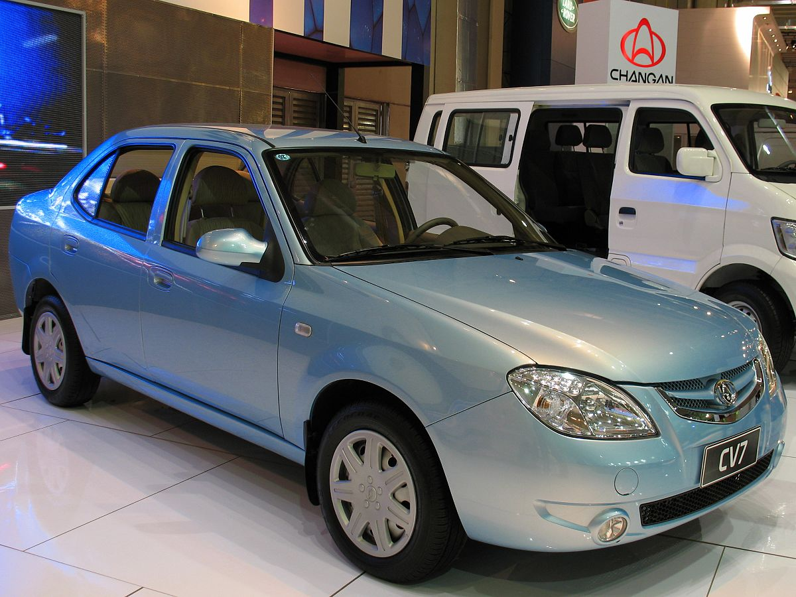
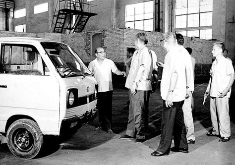
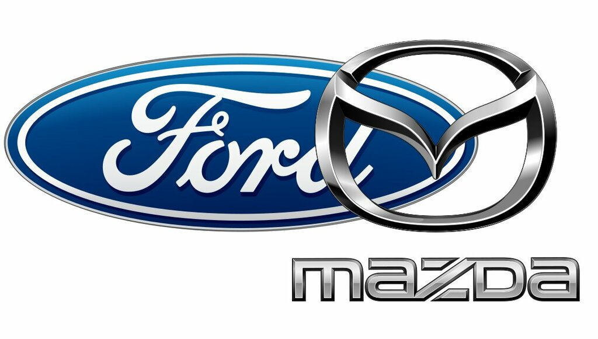

История Changan начинается в 1862 году, когда в Китае была основана промышленная компания, занимавшаяся выпуском различного оборудования и техники. Это предприятие стало основой для будущего автомобильного производства и заложило фундамент технологического развития компании.

В 1959 году Changan выпустила свой первый автомобиль, знаменуя начало активного развития автомобильной промышленности. С этого момента компания начала совершенствовать технологии производства и расширять ассортимент выпускаемых автомобилей.

В последующие десятилетия Changan активно сотрудничала с мировыми автопроизводителями, такими как Ford, Mazda и Suzuki. Это позволило компании внедрять передовые технологии, улучшать качество сборки и создавать современные модели автомобилей, соответствующие международным стандартам.

Сегодня Changan активно инвестирует в исследования и разработки, создавая инновационные решения в области: электромобилей, интеллектуальных систем управления, экологичных технологий. Компания стремится сочетать современный дизайн, безопасность и экологичность, делая автомобили удобными и надёжными для водителей по всему миру
Автомобили Changan продаются во многих странах мира. Бренд ассоциируется с надежностью, комфортом и технологическим прогрессом. Сегодня Changan продолжает развиваться, создавая автомобили будущего, которые вдохновляют пользователей и демонстрируют современный китайский автомобильный рынок на мировом уровне.